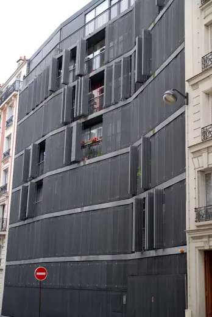
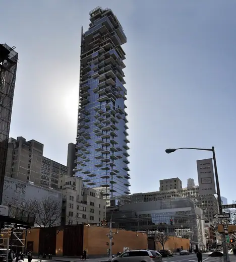
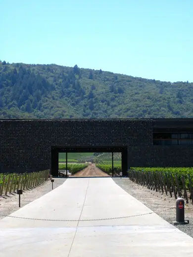
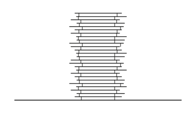
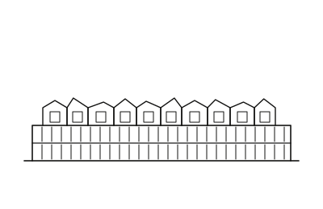

Herzog & de Meuron buildings 26
Sort
 Ricola Europe Production and Storage Building1993 · Mulhouse
Ricola Europe Production and Storage Building1993 · Mulhouse
Rue des Suisses Housing2000 · Paris Prada Aoyama2003 · Tokyo
Prada Aoyama2003 · Tokyo IKMZ Library, BTU Cottbus2004 · Cottbus
IKMZ Library, BTU Cottbus2004 · Cottbus de Young Museum2005 · San Francisco
de Young Museum2005 · San Francisco CaixaForum Madrid2008 · Madrid
CaixaForum Madrid2008 · Madrid 1111 Lincoln Road2010 · Miami Beach
1111 Lincoln Road2010 · Miami Beach Roche Tower (Bau 1)2015 · Basel
Roche Tower (Bau 1)2015 · Basel
56 Leonard Street2017 · New York Elbphilharmonie2017 · Hamburg
Elbphilharmonie2017 · Hamburg M+2021 · Hong Kong
M+2021 · Hong Kong National Library of Israel2023 · Jerusalem
National Library of Israel2023 · Jerusalem
Dominus Winery1997 · Yountville Tate Modern2000 · London
Tate Modern2000 · London Laban Dance Centre2003 · London
Laban Dance Centre2003 · London Schaulager2003 · Münchenstein
Schaulager2003 · Münchenstein Allianz Arena2005 · Munich
Allianz Arena2005 · Munich Beijing National Stadium2008 · Beijing
Beijing National Stadium2008 · Beijing TEA Tenerife Espacio de las Artes2008 · Santa Cruz de Tenerife
TEA Tenerife Espacio de las Artes2008 · Santa Cruz de Tenerife Blavatnik School of Government2015 · Oxford
Blavatnik School of Government2015 · Oxford Fondazione Giangiacomo Feltrinelli2016 · Milan
Fondazione Giangiacomo Feltrinelli2016 · Milan
Beirut Terraces2017 · Beirut Tai Kwun2018 · Hong Kong
Tai Kwun2018 · Hong Kong Meret Oppenheim Hochhaus2019 · Basel
Meret Oppenheim Hochhaus2019 · Basel Roche Tower 22022 · Basel
Roche Tower 22022 · Basel
University Children's Hospital Zurich2024 · Zurich